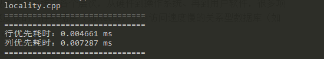

C++性能榨汁机之局部性原理
前言
《CSAPP》讲到了局部性原理：一个编写良好的计算机程序常常具有良好的局部性（loacality）。也就是说，它们倾向于引用邻近于其他最近引用过的数据项，或者最近引用过的数据项本身。这种倾向性，被称为局部性原理（principle of locality），是一个持久的概念，对硬件和软件系统的设计和性能都有着极大的影响。
局部性原理代码示例
为了让大家更加直观的感受到局部性原理对我们程序性能的影响，我们先看一段代码：1
2
3
4
5
6
7
8
9
10
11
12
13
14
15
16
17
18
19
20
21
22
23
24
25
26
27
28
29
30
31
32
33
34
35
36
37
38
39
40
41
42
43
44
45
46
47
48
using namespace std;
//求和函数，行优先
int sum_row_first(const vector<vector<int>> &data){
int sum = 0;
for(int i = 0; i < 1024; i++){
for(int j = 0; j < 1024; j++){
sum += data[i][j];
}
}
return sum;
}
//求和函数，列优先
int sum_col_first(const vector<vector<int>> &data){
int sum = 0;
for(int j = 0; j < 1024; j++){
for(int i = 0; i < 1024; i++){
sum += data[i][j];
}
}
return sum;
}
int main(){
vector<vector<int>> data(1024,vector<int>(1024,0));
//初始化二维数组
for(int i=0;i < 1024; i++){
for(int j=0; j < 1024; j++){
data[i][j] = rand() % 10;
}
}
chrono::steady_clock::time_point start_time = chrono::steady_clock::now();
sum_row_first(data); // 计算行优先求和函数耗时
chrono::steady_clock::time_point stop_time = chrono::steady_clock::now();
chrono::duration<double> time_span = chrono::duration_cast<chrono::microseconds>(stop_time - start_time);
std::cout << "行优先耗时："<< time_span.count() << " ms" << endl;
start_time = chrono::steady_clock::now();
sum_col_first(data); //计算列优先求和函数耗时
stop_time = chrono::steady_clock::now();
time_span = chrono::duration_cast<chrono::microseconds>(stop_time - start_time);
std::cout << "列优先耗时："<< time_span.count() << " ms" << endl;
}
上面这段代码我们主要定义了两个二维数组求和函数，其中sum_row_first函数按照二维数组的行求和（先访问第一行的所有元素，然后第二行……直到最后一行），而sum_col_first函数按照二维数组的列求和（先访问第一列的所有元素，然后第二列……直到最后一列）。逻辑上来讲，无论行优先访问还是列优先访问对函数运行的时间应该不会造成影响，毕竟，两个函数都是遍历了整个二维数组，但是实际运行结果如何呢？

从上图运行结果我们发现，行优先求和函数的总运行时间为0.004661ms，列优先求和函数的总运行时间为0.007287ms，列优先求和函数运行时间几乎是行优先求和函数运行时间的两倍，造成这两个函数运行速度相差巨大的原因就是局部性原理。
局部性原理
介绍局部性原理之前，我们需要先了解一下缓存的概念：在伪共享这篇博客中，我们提到了CPU中的缓存行的概念，CPU使用高速缓存以提高访问数据的速度，每次CPU取数据都首先检查高速缓存中是否已有所取数据，如果没有则从内存中取到数据（包括相邻的数据），缓存到CPU高速缓存中以供下次使用。缓存的概念充斥在现代操作系统的各个层次，从硬件到操作系统、再到用户软件，很多项目架构也使用到了缓存的思想，如使用访问速度快的内存数据库（如Redis）作为访问速度慢的关系型数据库（如Mysql）的缓存，以降低整个系统的访问时间。
CSAPP中定义了空间局部性：在一个良好空间局部性的程序中，如果一个存储器位置被引用了一次，那么程序很可能在不远的将来引用附近的一个存储器位置。
在C/C++编译系统中，二维数组的数据是按行存放的，所以每一行的数据在内存中是连续的，每一列的数据在内存中是相距较远的，上面代码中的行优先求和函数按行访问数据，当某个数据被缓存的时候，它附近跟它同一行的数据也被同时缓存进了高速缓存，所以当程序继续运行访问下一个数据时，由于该数据已经被缓存了，所以CPU可以很快的从高速缓存获取到该数据，而不用重新从内存中读取。但是列优先求和函数访问某一个数据时，把跟它同行的数据缓存进了高速缓存，但程序下一步却是访问下一行的对应列数据，所以导致缓存不命中，所以程序每一次访问数据都需要重新从内存中访问，所以速度相比于行优先程序有所降低。所以说行优先求和函数比列优先求和函数有更好的空间局部性。
总结
我们已经明白了局部性原理对我们程序性能的影响，在以后的代码编写时应尽量保证程序有较好的局部性，局部性比较好的程序更容易有较高的缓存命中率，而缓存命中率高的程序往往比缓存命中率低的程序运行速度更快。
最后请大家思考一个问题：为何堆排序平均复杂度和最差复杂度都为O(NlogN)，而快速排序平均复杂度O(NlogN)，最差复杂度会到O(N*N)，但为何快速排序应用反而远比堆排序应用广泛？
……
答案：快速排序的每一步访问的数据都是连续的，而堆排序中需要不停比较父子节点，如果父节点时N，则子节点是2N+1，两者在内存中相距较远。快速排序相比堆排序有更好的局部性，所以虽然两种排序方法的理论平均复杂度相同，但在计算机上运行时往往快速排序的表现大幅优于堆排序。